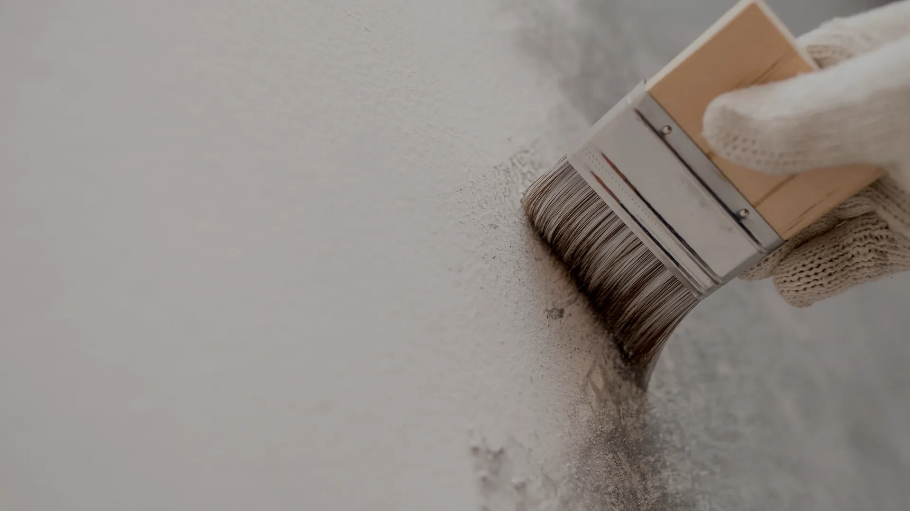

外壁塗装
住まいの第一印象を決め、雨風から建物を守る外壁。塗料選びから色決め、シーリングまで、職人がトータルでお手伝いします。

外壁塗装は、住まいの
「美しさ」と「寿命」を守る工事です。
外壁は、毎日雨や紫外線、風にさらされながら、住まいとそこで暮らすご家族を守っています。その外壁を保護しているのが、表面の「塗膜」です。塗膜は時間とともに少しずつ劣化し、一般的には10年前後で防水性が低下しはじめます。
塗膜が弱まった外壁は、雨水を吸い込みやすくなり、ひび割れや反り、内部の木材の腐食へとつながっていきます。外壁塗装は、見た目を新築のように美しくよみがえらせるだけでなく、建物の寿命を延ばすための大切なメンテナンスです。
ペンキ塗総業では、1級塗装技能士が外壁材の種類や劣化の状態を丁寧に診断し、最適な塗料と工法をご提案します。シーリングの打ち替えや付帯部の塗装まで含めて、長く安心できる仕上がりをお届けします。

こんなお悩み、ありませんか？
ひとつでも当てはまる場合は、早めの点検をおすすめします。
- 外壁を触ると白い粉がつく
- 細かなひび割れが目立ってきた
- 色あせて家が古く見える
- 北側にコケやカビが生えている
- 目地のゴム（シーリング）が割れている
- 前回の塗装から10年以上たった
放置すると、どうなる？
劣化は少しずつ、確実に進んでいきます。早めのメンテナンスが、結果的に費用を抑えることにつながります。
チョーキング・色あせ
塗膜の表面が紫外線で分解され、粉をふいたり色があせたりする段階。この時期の塗り替えなら、下地補修が少なく費用も抑えられます。

ひび割れ・シーリング劣化
塗膜の防水性が落ち、ひびや目地の隙間から雨水がしみ込みはじめます。外壁材そのものが水を吸い、反りや欠けの原因になります。

外壁材の傷み・雨漏り
内部の防水シートや木材まで傷み、雨漏りやカビ、構造材の腐食が発生。塗装では直せず、張り替えなどの大規模な工事が必要になります。
ペンキ塗総業の外壁塗装の特徴
職人直営の塗装店だからこそできる、ていねいな外壁塗装。3つのこだわりをご紹介します。
建物に合わせた、塗料選び
サイディング・モルタル・ALCなど、外壁材によって相性の良い塗料や下塗り材は異なります。耐久性・遮熱性・低汚染性などの性能と、ご予算や今後の住まい方を踏まえて、最低3つのプランをご提案。それぞれのメリットと注意点を正直にお伝えします。
シーリング工事も、確実に
外壁のつなぎ目を埋めるシーリングは、雨漏りを防ぐ重要な部分。ペンキ塗総業では、劣化したシーリングを撤去してから新しく充填する「打ち替え」を基本としています。耐久性の高い材料を使い、塗装と同じく長持ちする外壁に仕上げます。

手を抜かない、3回塗り
下塗り・中塗り・上塗りの3回塗りで、メーカーが定める塗布量と乾燥時間をきちんと守って施工します。見えなくなる下地処理こそ丁寧に。各工程は写真付きの進捗報告書で毎日ご確認いただけます。
色選びも、職人がサポートします
外壁の色は、住まいの印象を決める大切な要素。色見本や配色例を使って、イメージどおりの仕上がりになるまで一緒に考えます。
上品モダン
明るいアイボリーにチャコールの付帯部で、全体を引き締めます。
ナチュラル
グレージュとブラウン系で、周囲の緑になじむ温かな印象に。
シック
深みのあるネイビーに白の付帯部で、凛とした佇まいを演出。
色選びで失敗しないために
小さな色見本で選んだ色は、実際に広い壁に塗ると明るく、鮮やかに見える傾向があります。ペンキ塗総業では、A4サイズの大きな塗り板見本をお持ちし、晴れの日・曇りの日など、実際の光の下で確認していただいています。
また、屋根やサッシ、玄関ドアなど変えられない部分の色との相性や、ご近所の街並みとの調和も大切なポイント。職人の経験から、長く愛せる配色をご提案します。
色選びの3ステップ
- ご希望のイメージや好きな色をヒアリング
- 色見本・配色例で候補を2〜3パターンに
- 大きな塗り板で、屋外の光の下で最終確認
使用する主な塗料
外壁材や求める性能に合わせて、信頼できるメーカーの塗料を使い分けています。
シリコンREVO1000
価格と耐久性のバランスに優れた、もっとも選ばれている定番塗料です。
フッ素REVO1000
紫外線に強くツヤが長持ち。人気No.1のプレミアムプランで使用します。
無機ハイブリッドウォール
無機成分で劣化しにくく、塗り替えの回数を減らしたい方におすすめ。
REVO1000-IR（遮熱）
太陽光を反射して外壁の温度上昇を抑える、遮熱タイプのシリーズ。
料金の目安
代表的な工事の料金の目安です（すべて税込）。
| 工事内容 | 料金の目安 | 備考 |
|---|---|---|
| スタンダード（シリコン） | 89万円〜 | 30坪・足場込み／外壁＋屋根は118万円〜 |
| プレミアム（フッ素） | 109万円〜 | 30坪・足場込み／外壁＋屋根は142万円〜 |
| ハイグレード（無機） | 129万円〜 | 30坪・足場込み／外壁＋屋根は165万円〜 |
| シーリング打ち替え | 上記に含む | 劣化状況により増し打ちとなる場合があります |
※建物の形状・劣化状況により変動します。正確な金額は無料の現地調査後にお出しします。
外壁塗装の流れ
お問い合わせから完成まで、職人が責任を持って担当します。
現地調査・診断
外壁の劣化状況や外壁材を確認し、写真付きでご報告します。
プラン・色のご提案
3プランのお見積りと、色見本・配色例をご提示します。
近隣挨拶・足場設置
ご近所へご挨拶のうえ、足場と飛散防止ネットを設置します。
洗浄・下地処理
高圧洗浄で汚れを落とし、ひび補修やシーリングを行います。
3回塗り
下塗り・中塗り・上塗りで、ムラなく厚みのある塗膜に。
完了検査・お引き渡し
検査後に足場を解体し、Story動画をお渡しします。
お客様の声
色選びに悩んでいたら、大きな見本を何枚も持ってきてくれて、外で一緒に見比べてくれました。おかげで想像どおりの色に仕上がり、毎日帰宅するのが楽しみです。
見積書に塗料の缶数まで書いてあって驚きました。他社は「一式」ばかりだったので、こちらにお願いして正解でした。工事中の報告書も分かりやすかったです。
外壁塗装のよくある質問
30坪程度の一般的な住宅で、足場の設置から完了まで2週間程度です。雨の日は塗装ができないため、天候によって前後することがあります。
はい、普段どおりお過ごしいただけます。窓を養生する期間は開け閉めがしにくくなりますので、事前に日程をお知らせします。
水性塗料を中心に使用しているため、においは比較的少なめです。においが気になる方には、事前にご相談のうえ塗料をお選びします。
気温5℃以上・湿度85％未満であれば施工可能です。茨城県の冬は晴天が多く、乾燥しているため、塗装に向いている季節でもあります。
塗料の発注前であれば変更可能です。迷われている場合は、大きな塗り板見本で何度でもご確認いただけます。
関連するサービス


プレゼント中
まずは無料診断から。
お住まいの気になるところ、まずはお気軽にご相談ください。職人が直接うかがい、無料で診断・お見積りいたします。
 写真を送るだけで概算もOK
写真を送るだけで概算もOKお見積り